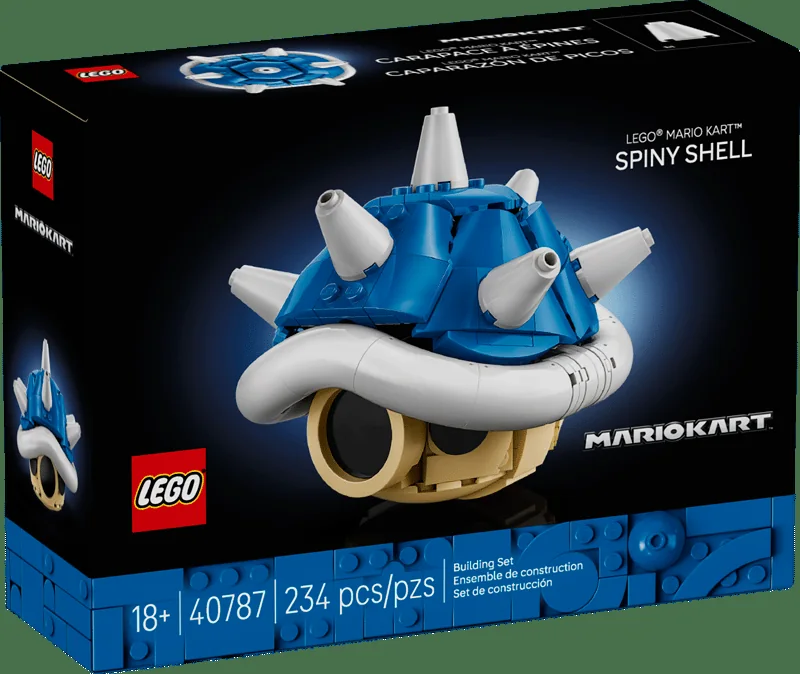
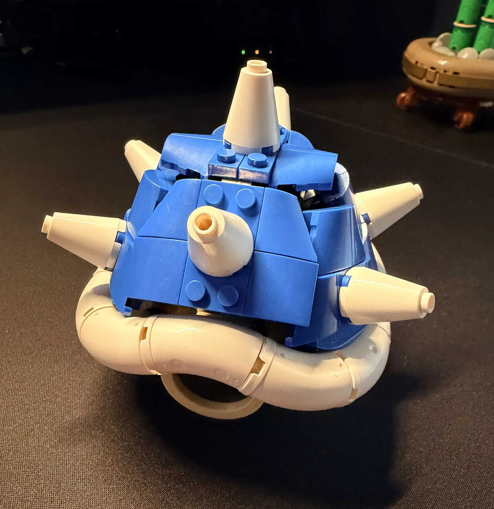
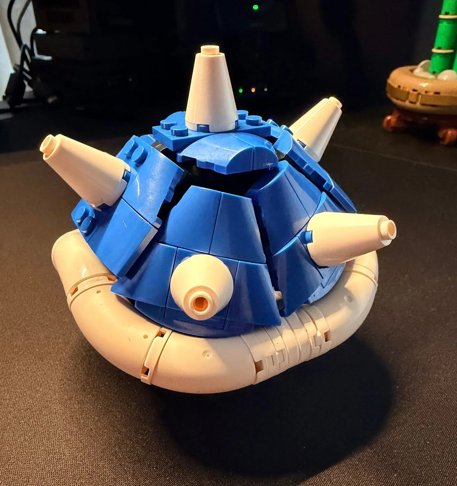
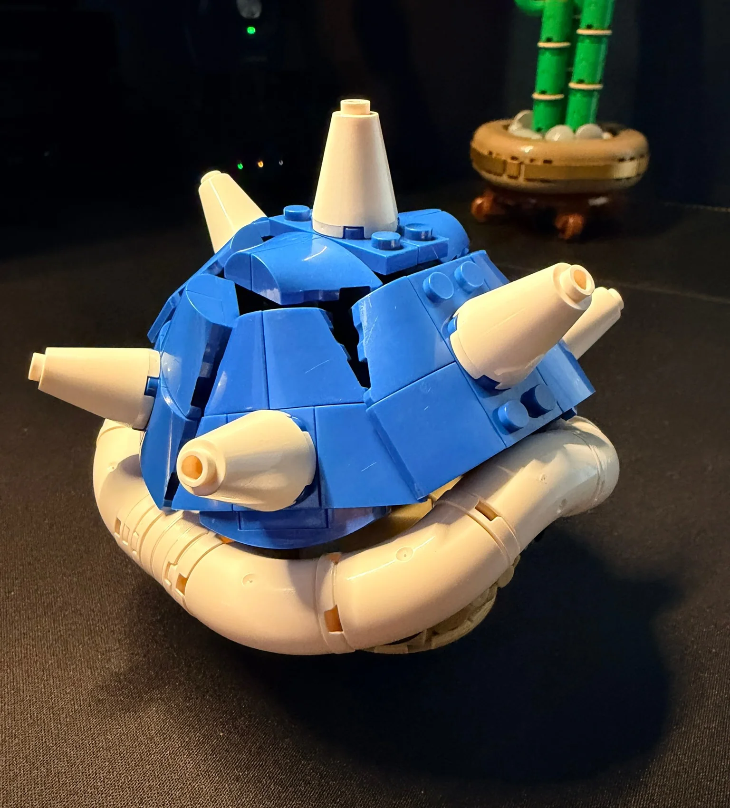
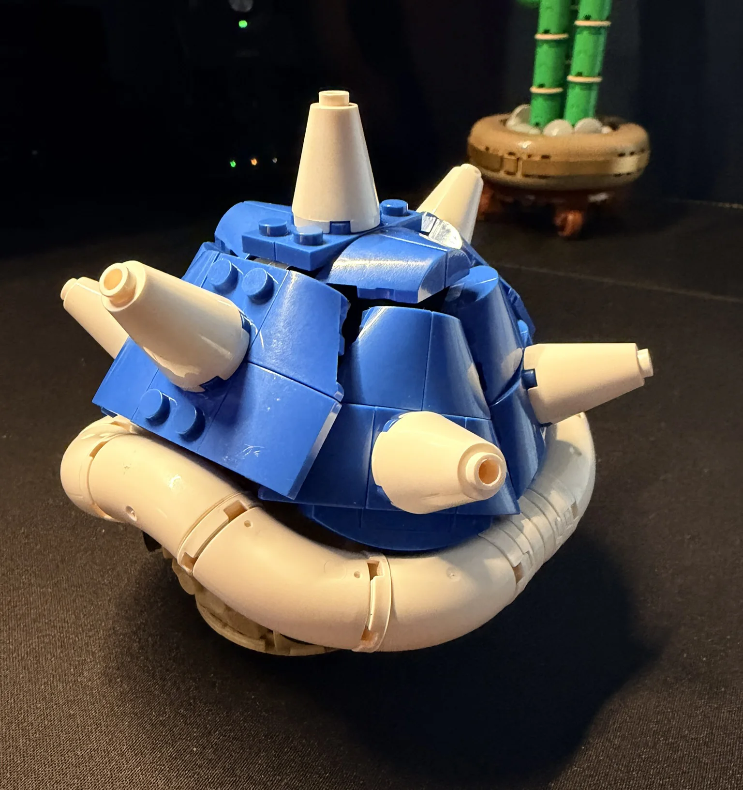
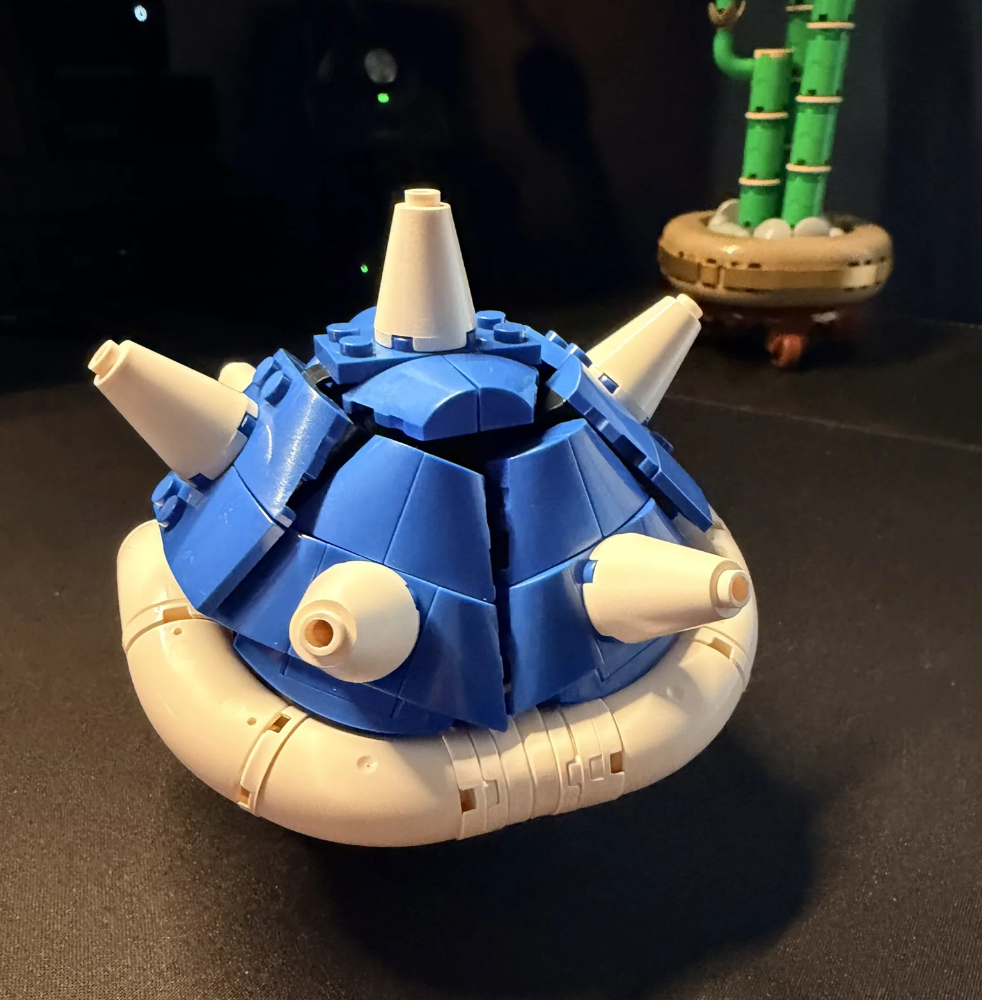

Mario Kart Spiny Shell
The unmistakable blue shell from Mario Kart, recreated with curved panels, a white rim and prominent spikes.

A Mario Kart icon in brick form.
This Spiny Shell build was sourced from BrickVivid and is based on the 234-piece Mario Kart Spiny Shell design, set 40787. The completed model captures the character of the familiar in-game item with a vivid blue shell and oversized white spikes.
These photos focus on the completed model, showing the curved body, spike placement and white rim from several angles.
The familiar Mario Kart power-up.
The bright blue shell, white spikes and rounded white rim bring the iconic Spiny Shell to life in brick form. The set artwork provides a reference for the finished display.


A closer look at the spikes.
Curved blue panels form the shell, with white cone-shaped spikes arranged across the top and sides. The photos show how the design changes as the model is turned.


Ready for display.
The final angles show the shape of the shell and its layered construction. A compact, colorful addition to the Mario Kart collection.


A small build with a recognizable silhouette.
The blue-and-white color scheme and oversized spikes make the Spiny Shell instantly recognizable. Its compact size makes it an easy display piece alongside other Mario Kart builds.
← Back to Builds